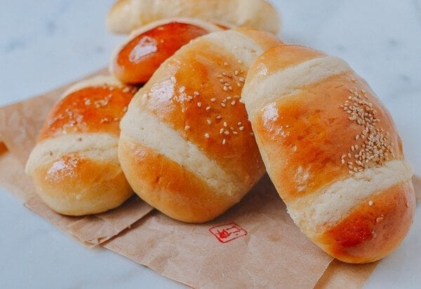

Coconut Bun Recipe

A favourite of mind from the chinese bakery are coconut buns!
Wouldn't ya know, here's a recipe
Source
Ingridients
The Dough
- 2/3 cup heavy cream (160 ml, at room temperature)
- 1 cup milk (plus 1 tablespoon, total 250 ml, at room temperature)
- 1 large egg (at room temperature)
- 1/3 cup sugar (75g)
- 1/2 cup cake flour (70 g)
- 3 1/2 cups bread flour (500g)
- 1 tablespoon active dry yeast (11g)
- 1 1/2 teaspoons salt (7g)
The Filling
- 6 tablespoons butter (85g, softened)
- 3 tablespoons caster sugar (38g, or superfine sugar)
- 3 tablespoons cake flour (19g)
- ¼ cup dry milk powder (30g)
- ½ cup desiccated coconut (40g)
The Toppings
- 1/3 cup cake flour (38g)
- 3 tablespoons butter (43g, softened)
- 4 ½ teaspoons caster sugar (20g, or superfine sugar)
- egg wash (1 egg beaten with 1 tablespoon water)
- 1 tablespoon toasted sesame seeds (9g)
- 1 tablespoon sugar (12g, dissolved in 1 tablespoon/15 ml hot water)
Instructions
- Start by making the bread dough, and be sure your ingredients are at
room temperature. In the bowl of a mixer, add the heavy cream, milk,
egg, sugar, cake flour, bread flour, yeast, and salt (in that order).
Using the dough hook attachment, turn on the mixer at its lowest
setting.
- Let it go for 15 minutes, occasionally stopping the mixer to push the
dough together. (Note: if you’re in a humid climate, and the dough is
too sticky, add more flour ¼ cup at a time until the dough comes
together). After 15 minutes, the dough is ready for proofing. Cover
the bowl with a damp towel and place in a warm spot for 1 hour. The
dough will grow to about 1.5X its original size.
- Meanwhile, prepare the filling by thoroughly combining all the filling
ingredients in a bowl. Set aside.
- After the bread dough has proofed for an hour, put the dough back in
the mixer and knead slowly for another 5 minutes to get rid of air
bubbles. Dump the dough on a lightly floured surface and cut into 12
equal pieces.
- Flatten each piece of dough with your hands into a rough oval shape,
about 4 inches long and 3 inches wide. Spread about a tablespoon of
filling onto the middle of the dough, and roll it into a cigar,
tucking the ends under the bun to completely seal the filling in. We
like this method because it evenly distributes the filling throughout
the bun.
- Transfer the buns to a parchment-lined baking sheet and cover with a
clean kitchen towel. Allow to rise for another 45 minutes to an hour.
- Preheat your oven to 350 degrees. For the topping, mix together 1/3
cup cake flour, 3 tablespoons softened butter, and 4 ½ teaspoons
caster sugar, and transfer to a piping bag or small zip top bag with
a small corner cut off. Set aside.
- Once the buns have risen, brush with egg wash. Pipe two stripes of
your topping mixture onto each bun, and sprinkle each with sesame
seeds. Bake for 15-17 minutes until golden. Remove from the oven and
brush with the sugar syrup.